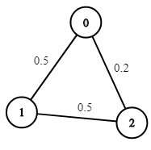
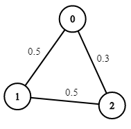
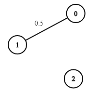

| Category | Difficulty | Likes | Dislikes |
|---|---|---|---|
| Algorithms | Medium | 3843 | 109 |
google | amazon
You are given an undirected weighted graph of n nodes (0-indexed), represented by an edge list where edges[i] = [a, b] is an undirected edge connecting the nodes a and b with a probability of success of traversing that edge succProb[i].
Given two nodes start and end, find the path with the maximum probability of success to go from start to end and return its success probability.
If there is no path from start to end, return 0. Your answer will be accepted if it differs from the correct answer by at most 1e-5.
Example 1:

Input: n = 3, edges = [[0,1],[1,2],[0,2]], succProb = [0.5,0.5,0.2], start = 0, end = 2
Output: 0.25000
Explanation: There are two paths from start to end, one having a probability of success = 0.2 and the other has 0.5 * 0.5 = 0.25.Example 2:

Input: n = 3, edges = [[0,1],[1,2],[0,2]], succProb = [0.5,0.5,0.3], start = 0, end = 2
Output: 0.30000Example 3:

Input: n = 3, edges = [[0,1]], succProb = [0.5], start = 0, end = 2
Output: 0.00000
Explanation: There is no path between 0 and 2.
Constraints:
2 <= n <= 10^40 <= start, end < nstart != end0 <= a, b < na != b0 <= succProb.length == edges.length <= 2*10^40 <= succProb[i] <= 1